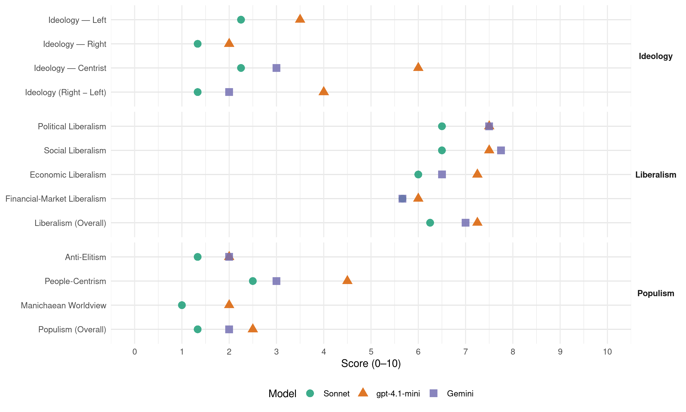

CDA (Netherlands, 1986)
manifesto_id 22521_198605
Get full text: This site shows derived annotations and short verbatim quotes only. The full manifesto text is © Manifesto Project / WZB — obtain it via manifesto-project.wzb.eu using the manifesto_id above.
Headline scores
| Dimension | Sonnet | gpt-4.1-mini | Gemini |
|---|---|---|---|
| Populism (Overall) | 1.3 | 2.5 | 2.0 |
| Anti-Elitism | 1.3 | 2.0 | 2.0 |
| People-Centrism | 2.5 | 4.5 | 3.0 |
| Manichaean Worldview | 1.0 | 2.0 | – |
| Ideology (Right − Left) | 1.3 | 4.0 | 2.0 |
| Liberalism (Overall) | 6.2 | 7.2 | 7.0 |
| Political Liberalism | 6.5 | 7.5 | 7.5 |
| Social Liberalism | 6.5 | 7.5 | 7.8 |
| Economic Liberalism | 6.0 | 7.2 | 6.5 |
| Financial-Market Liberalism | 5.7 | 6.0 | 5.7 |
Evidence per dimension
Economic Liberalism
Gemini · score 7.0 · verified · chunk 1
“privatisering van overheidstaken naar ideële organisaties”
verschuiving van taken van overheid naar maatschappij, van centraal beleid naar uitvoering: privatisering van overheidstaken naar ideële organisaties en commerciële ondernemingen en afslanking van de
Gemini · score 7.0 · verified · chunk 2
“georienteerde markteconomie, dat wil zeggen een economie”
maatschappelijke verbanden. De georienteerde markteconomie, dat wil zeggen een economie die genormeerd wordt door
Gemini · score 6.0 · verified · chunk 3
“stimulerend vestigingsbeleid voor het bedrijfsleven”
Het economisch draagvlak wordt, door een stimulerend vestigingsbeleid voor het bedrijfsleven in het algemeen en voor de
Gemini · score 6.0 · verified · chunk 4
“stimulerend vestigingsbeleid voor het bedrijfsleven”
Het economisch draagvlak wordt, door een stimulerend vestigingsbeleid voor het bedrijfsleven in het algemeen en voor de kleinschalige
gpt-4.1-mini · score 7.0 · verified · chunk 1
“het bevorderen van de werkgelegenheid, vooral door het beleid op versterking van de economische structuur te richten”
-het bevorderen van de werkgelegenheid, vooral door het beleid op versterking van de economische structuur te richten. - het beschermen van de noodzakelijke basisvoorzieningen (van materiele en immateriële aard) op het gebied van wonen, gezondheidszorg, onderwijs en inkomen.
gpt-4.1-mini · score 8.0 · verified · chunk 2
“de overheid creëert de randvoorwaarden waardoor de doelstellingen van economische groei en meer werkgelegenheid optimaal kunnen worden gerealiseerd”
…2. De overheid draagt de eerste verantwoordelijkheid voor het macro-economisch beleid, dat gericht is op economische groei en meer werkgelegenheid. De overheid creëert de randvoorwaarden waardoor de doelstellingen van economische groei en meer werkgelegenheid optimaal kunnen worden gerealiseerd. Op basis van die randvoorwaarden zijn die sociale partners nauw betrokken bij c.q. verantwoordelijk voor de ontwikkeling, vaststelling en uitvoering van het sociaal-economisch beleid…
gpt-4.1-mini · score 7.0 · verified · chunk 3
“het onderwijs vormt zodoende ook een wezenlijke factor in de internationale concurrentiepositie”
Daarnaast bepaalt de sociale en economische betekenis van het onderwijs mede de positie en de rol van ons land. Het onderwijs vormt zodoende ook een wezenlijke factor in de internationale concurrentiepositie.
gpt-4.1-mini · score 7.0 · verified · chunk 4
“stimulerend vestigingsbeleid voor het bedrijfsleven”
Het economisch draagvlak wordt, door een stimulerend vestigingsbeleid voor het bedrijfsleven in het algemeen en voor de kleinschalige stedelijke bedrijven in het bijzonder, verhoogd.
Sonnet · score 6.0 · verified · chunk 1
“privatisering van overheidstaken naar ideële organisaties en commerciële”
verschuiving van taken van overheid naar maatschappij, van centraal beleid naar uitvoering: privatisering van overheidstaken naar ideële organisaties en commerciële ondernemingen en afslanking van de overheidsbureaucratie ten bate van uitvoerende taken.
Sonnet · score 6.0 · verified · chunk 2
“georienteerde markteconomie”
De georienteerde markteconomie, dat wil zeggen een economie die genormeerd wordt door sociaal en ecologisch verantwoorde voorwaarden en niet ten koste gaat van de ontwikkelingslanden, vormt hiervoor het uitgangspunt.
Sonnet · score 6.0 · verified · chunk 3
“deregulerings- en activeringsbeleid dient met kracht”
Het nu door de overheid voorgestane deregulerings- en activeringsbeleid dient met kracht te worden voortgezet
Sonnet · score 6.0 · verified · chunk 4
“stimulerend vestigingsbeleid voor het bedrijfsleven”
Het economisch draagvlak wordt, door een stimulerend vestigingsbeleid voor het bedrijfsleven in het algemeen en voor de kleinschalige stedelijke bedrijven in het bijzonder, verhoogd.
Financial-Market Liberalism
Gemini · score 6.0 · verified · chunk 1
“kapitaalmarktmiddelen omgezet in begrotingsmiddelen”
netto nationaal inkomen. Elk jaar wordt cumulatief f100 miljoen aan kapitaalmarktmiddelen omgezet in begrotingsmiddelen. Gestreefd wordt naar indamming van oneigenlijke
Gemini · score 6.0 · verified · chunk 2
“particulier initiatief (w.o. banken) bevorderd”
overheid in samenspel met het particulier initiatief (w.o. banken) bevorderd. Ter verkleining van de
Gemini · score 5.0 · verified · chunk 3
“particuliere ziektekostenverzekeraars en ziekenfondsen”
verschillen in leeftijdsopbouw tussen particuliere verzekeraars en ziekenfondsen trekken zonodig scheve verhoudingen
gpt-4.1-mini · score 6.0 · verified · chunk 1
“elk jaar wordt cumulatief f100 miljoen aan kapitaalmarktmiddelen omgezet in begrotingsmiddelen”
In de komende kabinetsperiode blijft de Nederlandse ontwikkelingsinspanning gehandhaafd op minimaal 11/2% van het netto nationaal inkomen. Elk jaar wordt cumulatief f100 miljoen aan kapitaalmarktmiddelen omgezet in begrotingsmiddelen. Gestreefd wordt naar indamming van oneigenlijke toerekeningen.
gpt-4.1-mini · score 6.0 · verified · chunk 2
“de overheid moet zo doelmatig mogelijk omgaan met de beschikbare middelen”
…51. De overheid moet zo doelmatig mogelijk omgaan met de beschikbare middelen. Door doelmatigheid te bevorderen wordt de legitimiteit van het overheidshandelen vergroot; de burgers moeten het vertrouwen (her)krijgen dat de overheid de belastingmiddelen op verantwoorde wijze aanwendt. Daarnaast kan de verhoging van de doelmatigheid worden aangewend om een deel van de bezuinigingsproblematiek op te lossen en/of om ruimte vrij te maken voor nieuw beleid…
Sonnet · score 6.0 · verified · chunk 1
“Uitbouw van het Europees Monetair Systeem inclusief een grotere rol”
Uitbouw van het Europees Monetair Systeem inclusief een grotere rol voor de ECU en de externe werking van deze Europese rekeneenheid. Op lange termijn zal de ECU de nationale munteenheden moeten gaan vervangen.
Sonnet · score 6.0 · verified · chunk 2
“spaarzin, met name ook wanneer deze is gericht op het beleggen in aandelen”
56. De spaarzin, met name ook wanneer deze is gericht op het beleggen in aandelen, wordt bevorderd.
Sonnet · score 5.0 · verified · chunk 3
“premie is inkomensafhankelijk en aan een maximum gebonden”
De premie is inkomensafhankelijk en aan een maximum gebonden. De werkgeverslasten mogen door die herstructurering niet stijgen
Political Liberalism
Gemini · score 8.0 · verified · chunk 1
“handhaven van de democratische rechtsorde”
internationale orde. - zorg voor natuur en milieu. - het handhaven van de democratische rechtsorde naar buiten en naar binnen toe. Extra aandacht krijgt
Gemini · score 8.0 · verified · chunk 2
“onafhankelijke rechter te worden getoetst”
rechtmatigheid van de staking behoort door de onafhankelijke rechter te worden getoetst. Wetgeving ter zake
Gemini · score 7.0 · verified · chunk 3
“artikel 23 van de Grondwet”
Het onderwijsbeleid gaat uit van artikel 23 van de Grondwet. Daarin is rechtsgelijkheid en vrijheid
Gemini · score 7.0 · verified · chunk 4
“decentralisatie, democratische besluitvorming”
planologische kernbeslissingen worden uit een oogpunt van decentralisatie, democratische besluitvorming en begrenzing van sectorale bevoegdheden concrete
gpt-4.1-mini · score 8.0 · verified · chunk 1
“het handhaven van de democratische rechtsorde”
- het handhaven van de democratische rechtsorde naar buiten en naar binnen toe. Extra aandacht krijgt de juridische vormgeving en rechtsbescherming van maatschappelijke verbanden. Het parlement moet zijn positie versterken door zich, als controlerend en medewetgevend orgaan op hoofdzaken van het beleid te concentreren.
gpt-4.1-mini · score 7.0 · verified · chunk 2
“de overheid draagt de eerste verantwoordelijkheid voor het macro-economisch beleid”
…1. Het CDA streeft naar een economische orde waarin onderlinge zorg en medeverantwoordelijkheid gestalte krijgen in voor burgers herkenbare maatschappelijke verbanden. De georienteerde markteconomie, dat wil zeggen een economie die genormeerd wordt door sociaal en ecologisch verantwoorde voorwaarden en niet ten koste gaat van de ontwikkelingslanden, vormt hiervoor het uitgangspunt. 2. De overheid draagt de eerste verantwoordelijkheid voor het macro-economisch beleid, dat gericht is op economische groei en meer werkgelegenheid…
gpt-4.1-mini · score 8.0 · verified · chunk 3
“het onderwijsbeleid gaat uit van artikel 23 van de Grondwet”
Het onderwijsbeleid gaat uit van artikel 23 van de Grondwet. Daarin is rechtsgelijkheid en vrijheid van onderwijs (richting, inrichting en stichting) gewaarborgd en de zorg van de overheid voor het onderwijs geformuleerd.
gpt-4.1-mini · score 7.0 · verified · chunk 4
“decentrale, democratische besluitvorming”
Aan planologische kernbeslissingen worden uit een oogpunt van decentralisatie, democratische besluitvorming en begrenzing van sectorale bevoegdheden concrete inhoudsvereisten gesteld.
Sonnet · score 7.0 · verified · chunk 1
“handhaven van de democratische rechtsorde naar buiten”
het handhaven van de democratische rechtsorde naar buiten en naar binnen toe. Extra aandacht krijgt de juridische vormgeving en rechtsbescherming van maatschappelijke verbanden. De rechtsstaat verdient meer waardering.
Sonnet · score 6.0 · verified · chunk 2
“rechtmatigheid van de staking behoort door de onafhankelijke rechter”
46.c De rechtmatigheid van de staking behoort door de onafhankelijke rechter te worden getoetst. Wetgeving ter zake dient niet te worden bevorderd.
Sonnet · score 6.0 · verified · chunk 3
“artikel 23 van de Grondwet”
Het onderwijsbeleid gaat uit van artikel 23 van de Grondwet. Daarin is rechtsgelijkheid en vrijheid van onderwijs (richting, inrichting en stichting) gewaarborgd
Sonnet · score 7.0 · verified · chunk 4
“democratische besluitvorming en begrenzing van sectorale bevoegdheden”
Aan planologische kernbeslissingen worden uit een oogpunt van decentralisatie, democratische besluitvorming en begrenzing van sectorale bevoegdheden concrete inhoudsvereisten gesteld.
Liberalism (Overall)
Gemini · score 7.0 · verified · chunk 1
“handhaven van de democratische rechtsorde”
internationale orde. - zorg voor natuur en milieu. - het handhaven van de democratische rechtsorde naar buiten en naar binnen toe. Extra aandacht krijgt
Gemini · score 7.0 · verified · chunk 2
“georienteerde markteconomie, dat wil zeggen een economie”
maatschappelijke verbanden. De georienteerde markteconomie, dat wil zeggen een economie die genormeerd wordt door
Gemini · score 7.0 · verified · chunk 3
“artikel 23 van de Grondwet”
Het onderwijsbeleid gaat uit van artikel 23 van de Grondwet. Daarin is rechtsgelijkheid en vrijheid
Gemini · score 7.0 · verified · chunk 4
“decentralisatie, democratische besluitvorming”
planologische kernbeslissingen worden uit een oogpunt van decentralisatie, democratische besluitvorming en begrenzing van sectorale bevoegdheden concrete
gpt-4.1-mini · score 7.0 · verified · chunk 1
“het handhaven van de democratische rechtsorde”
- het handhaven van de democratische rechtsorde naar buiten en naar binnen toe. Extra aandacht krijgt de juridische vormgeving en rechtsbescherming van maatschappelijke verbanden. Het parlement moet zijn positie versterken door zich, als controlerend en medewetgevend orgaan op hoofdzaken van het beleid te concentreren.
gpt-4.1-mini · score 7.0 · verified · chunk 2
“de overheid draagt de eerste verantwoordelijkheid voor het macro-economisch beleid”
…1. Het CDA streeft naar een economische orde waarin onderlinge zorg en medeverantwoordelijkheid gestalte krijgen in voor burgers herkenbare maatschappelijke verbanden. De georienteerde markteconomie, dat wil zeggen een economie die genormeerd wordt door sociaal en ecologisch verantwoorde voorwaarden en niet ten koste gaat van de ontwikkelingslanden, vormt hiervoor het uitgangspunt. 2. De overheid draagt de eerste verantwoordelijkheid voor het macro-economisch beleid, dat gericht is op economische groei en meer werkgelegenheid…
gpt-4.1-mini · score 8.0 · verified · chunk 3
“het onderwijsbeleid gaat uit van artikel 23 van de Grondwet”
Het onderwijsbeleid gaat uit van artikel 23 van de Grondwet. Daarin is rechtsgelijkheid en vrijheid van onderwijs (richting, inrichting en stichting) gewaarborgd en de zorg van de overheid voor het onderwijs geformuleerd.
gpt-4.1-mini · score 7.0 · verified · chunk 4
“decentrale, democratische besluitvorming”
Aan planologische kernbeslissingen worden uit een oogpunt van decentralisatie, democratische besluitvorming en begrenzing van sectorale bevoegdheden concrete inhoudsvereisten gesteld.
Sonnet · score 7.0 · verified · chunk 1
“handhaven van de democratische rechtsorde naar buiten”
het handhaven van de democratische rechtsorde naar buiten en naar binnen toe. Extra aandacht krijgt de juridische vormgeving en rechtsbescherming van maatschappelijke verbanden.
Sonnet · score 6.0 · verified · chunk 2
“georienteerde markteconomie”
De georienteerde markteconomie, dat wil zeggen een economie die genormeerd wordt door sociaal en ecologisch verantwoorde voorwaarden en niet ten koste gaat van de ontwikkelingslanden, vormt hiervoor het uitgangspunt.
Sonnet · score 6.0 · verified · chunk 3
“deregulerings- en activeringsbeleid dient met kracht”
Het nu door de overheid voorgestane deregulerings- en activeringsbeleid dient met kracht te worden voortgezet
Sonnet · score 6.0 · verified · chunk 4
“stimulerend vestigingsbeleid voor het bedrijfsleven”
Het economisch draagvlak wordt, door een stimulerend vestigingsbeleid voor het bedrijfsleven in het algemeen en voor de kleinschalige stedelijke bedrijven in het bijzonder, verhoogd.
Anti-Elitism
Gemini · score 2.0 · verified · chunk 2
“sturingspretenties van de overheid”
ondergeschikt gemaakt aan de regel en sturingspretenties van de overheid. Vaak onbedoeld had dit
gpt-4.1-mini · score 2.0 · verified · chunk 1
“De overheid is niet (en kan ook niet zijn) een almachtig orakel”
Daarom weigert het CDA zijn politiek op het menselijk egoïsme te baseren. Evenmin beschouwen wij de maatschappij als een samenleving, waarvan de Staat alle touwtjes in handen houdt. De overheid is niet (en kan ook niet zijn) een almachtig orakel dat de oplossing aanreikt voor elk probleem waar iemand zelf geen gat meer ziet.
gpt-4.1-mini · score 2.0 · verified · chunk 2
“de overheid - en daarmee de politiek - voor al het gezamenlijke dient zorg te dragen”
…de maatschappij is ingericht. In de jaren zestig en zeventig is geleidelijk aan de opvatting gegroeid dat de overheid - en daarmee de politiek - voor al het gezamenlijke dient zorg te dragen. Daardoor ontstond een verwachtingspatroon…
Sonnet · score 2.0 · verified · chunk 1
“verwachtingspatroon dat ‘Den Haag’ het sociaal-economisch”
Daardoor ontstond een verwachtingspatroon dat ‘Den Haag’ het sociaal-economisch leven in belangrijke mate moet sturen. Taken en verantwoordelijkheden van burgers, bedrijven en maatschappelijke organisaties werden beïnvloed
Sonnet · score 2.0 · mixed · chunk 2
“te grote verwachtingen van de politiek”
De vernieuwing van de samenleving vraagt om een herbezinning op taken en verantwoordelijkheden. De te grote verwachtingen van de politiek hebben teleurstellingen gebracht.
Sonnet · score 1.0 · verified · chunk 3
“nieuwe, dure bureaucratieën te voorkomen”
Om het ontstaan van nieuwe, dure bureaucratieën te voorkomen worden de werkzaamheden van de Kamers mede bekostigd
Sonnet · score 1.0 · verified · chunk 4
“democratische besluitvorming en begrenzing van sectorale bevoegdheden”
Aan planologische kernbeslissingen worden uit een oogpunt van decentralisatie, democratische besluitvorming en begrenzing van sectorale bevoegdheden concrete inhoudsvereisten gesteld.
Ideology — Centrist
Gemini · score 3.0 · verified · chunk 2
“sturingspretenties van de overheid”
ondergeschikt gemaakt aan de regel en sturingspretenties van de overheid. Vaak onbedoeld had dit
gpt-4.1-mini · score 7.0 · verified · chunk 1
“samen werken voor morgen uitzicht geschapen”
Zo wordt door samen werken voor morgen uitzicht geschapen. Ontwikkelingssamenwerking, buitenlands beleid en defensie PLAATS EN TAAK VAN NEDERLAND IN DE WERELD
gpt-4.1-mini · score 5.0 · verified · chunk 2
“De overheid draagt de eerste verantwoordelijkheid voor het macro-economisch beleid”
…1. Het CDA streeft naar een economische orde waarin onderlinge zorg en medeverantwoordelijkheid gestalte krijgen in voor burgers herkenbare maatschappelijke verbanden. De georienteerde markteconomie, dat wil zeggen een economie die genormeerd wordt door sociaal en ecologisch verantwoorde voorwaarden en niet ten koste gaat van de ontwikkelingslanden, vormt hiervoor het uitgangspunt. 2. De overheid draagt de eerste verantwoordelijkheid voor het macro-economisch beleid, dat gericht is op economische groei en meer werkgelegenheid…
Sonnet · score 2.0 · verified · chunk 1
“samen werken voor morgen uitzicht geschapen”
Zo wordt door samen werken voor morgen uitzicht geschapen.
Sonnet · score 4.0 · verified · chunk 2
“verantwoordelijkheid van burgers en hun organisaties”
taken en verantwoordelijkheden van burgers, bedrijven en maatschappelijke organisaties werden beïnvloed of soms zelfs ondergeschikt gemaakt aan de regel en sturingspretenties van de overheid.
Sonnet · score 1.0 · verified · chunk 3
“eigen verantwoordelijkheid van de burger”
opdat de eigen verantwoordelijkheid van de burger en zijn organisaties voor cultuurparticipatie en voor beheer en onderhoud van voorzieningen
Sonnet · score 2.0 · verified · chunk 4
“evenwichtig afwegen van belangen”
Een evenwichtig afwegen van belangen is hierbij een vereiste voor goed bestuur.
Ideology — Left
gpt-4.1-mini · score 4.0 · verified · chunk 1
“rechtvaardiger internationale economische orde”
Het CDA streeft naar een wereldrechtsorde die gerechtigheid als kenmerk heeft. Onze doelstellingen zijn: betere verdeling van de welvaart in de wereld, naleving van de rechten van de mens, een verenigd Europa en vrede in de wereld met zo min mogelijk wapens.
gpt-4.1-mini · score 3.0 · verified · chunk 2
“herverdeling van arbeid en onderdelen van de sociale zekerheid”
…In kaderscheppende zin komen in het overleg tussen overheid en sociale partners vraagstukken aan de orde zoals inkomensontwikkeling, inkomensverhoudingen en herverdeling van arbeid, ook die van mannen en vrouwen. Belangrijke punten van overweging zijn hierbij het versterken van de economische structuur, het creëren van voor waarden voor arbeidsduurverkorting en het wegnemen van knelpunten op de arbeidsmarkt…
Sonnet · score 2.0 · verified · chunk 1
“solidariteit, welke groeps- en klassengrenzen overschrijdt”
solidariteit, welke groeps- en klassengrenzen overschrijdt, de zwakken in de samenleving beschermt en op internationaal gebied ontwikkelingssamenwerking bevordert.
Sonnet · score 3.0 · verified · chunk 2
“zorg voor de positie van de laagste inkomens”
Zij ligt met name in het waarborgen van een materiele en immateriële basis van bestaan. Daartoe rekent het CDA vooral de zorg voor de positie van de laagste inkomens.
Sonnet · score 2.0 · verified · chunk 3
“voor ieder gegarandeerde voorziening in elementaire risico’s”
gebaseerd op een zorgvuldige verdeling van de verantwoordelijkheid voor eigen en andermans gezondheid enerzijds en een voor ieder gegarandeerde voorziening in elementaire risico’s anderzijds
Sonnet · score 2.0 · verified · chunk 4
“opheffen van regionale achterstanden en ongelijkheden”
Het opheffen van regionale achterstanden en ongelijkheden op het gebied van de sociaal-economische ontwikkeling en het voorzieningenniveau is een gezamenlijke verantwoordelijkheid van rijk en lagere overheden.
Ideology (Right − Left)
Gemini · score 2.0 · verified · chunk 2
“sturingspretenties van de overheid”
ondergeschikt gemaakt aan de regel en sturingspretenties van de overheid. Vaak onbedoeld had dit
gpt-4.1-mini · score 5.0 · verified · chunk 1
“De overheid is niet (en kan ook niet zijn) een almachtig orakel”
Evenmin beschouwen wij de maatschappij als een samenleving, waarvan de Staat alle touwtjes in handen houdt. De overheid is niet (en kan ook niet zijn) een almachtig orakel dat de oplossing aanreikt voor elk probleem waar iemand zelf geen gat meer ziet.
gpt-4.1-mini · score 3.0 · verified · chunk 2
“De overheid draagt de eerste verantwoordelijkheid voor het macro-economisch beleid”
…1. Het CDA streeft naar een economische orde waarin onderlinge zorg en medeverantwoordelijkheid gestalte krijgen in voor burgers herkenbare maatschappelijke verbanden. De georienteerde markteconomie, dat wil zeggen een economie die genormeerd wordt door sociaal en ecologisch verantwoorde voorwaarden en niet ten koste gaat van de ontwikkelingslanden, vormt hiervoor het uitgangspunt. 2. De overheid draagt de eerste verantwoordelijkheid voor het macro-economisch beleid, dat gericht is op economische groei en meer werkgelegenheid…
Sonnet · score 2.0 · verified · chunk 1
“solidariteit, welke groeps- en klassengrenzen overschrijdt”
solidariteit, welke groeps- en klassengrenzen overschrijdt, de zwakken in de samenleving beschermt en op internationaal gebied ontwikkelingssamenwerking bevordert.
Sonnet · score 2.0 · mixed · chunk 2
“te grote verwachtingen van de politiek”
De vernieuwing van de samenleving vraagt om een herbezinning op taken en verantwoordelijkheden. De te grote verwachtingen van de politiek hebben teleurstellingen gebracht.
Sonnet · score 1.0 · verified · chunk 3
“voor ieder gegarandeerde voorziening in elementaire risico’s”
gebaseerd op een zorgvuldige verdeling van de verantwoordelijkheid voor eigen en andermans gezondheid enerzijds en een voor ieder gegarandeerde voorziening in elementaire risico’s anderzijds
Sonnet · score 1.0 · verified · chunk 4
“evenwichtig afwegen van belangen”
Een evenwichtig afwegen van belangen is hierbij een vereiste voor goed bestuur.
Ideology — Right
gpt-4.1-mini · score 2.0 · verified · chunk 1
“De toelating van vreemdelingen in ons land blijft beperkt”
De toelating van vreemdelingen in ons land blijft beperkt. Slechts om humanitaire redenen (b.v. gezinshereniging) kan hierop een uitzondering worden gemaakt. De positie van zigeuners behoeft bijzondere aandacht.
Sonnet · score 1.0 · verified · chunk 1
“toelating van vreemdelingen in ons land blijft beperkt”
De toelating van vreemdelingen in ons land blijft beperkt. Slechts om humanitaire redenen (b.v. gezinshereniging) kan hierop een uitzondering worden gemaakt.
Sonnet · score 2.0 · verified · chunk 3
“levensbeschouwelijke verscheidenheid in het aanbod”
de wettelijk te omschrijven garantie voor levens- of wereldbeschouwelijke verscheidenheid in het aanbod op basis van voldoende draagvlak in de bevolking
Sonnet · score 1.0 · verified · chunk 4
“particulier vervoer”
Per voorgenomen verplaatsing kan ieder het gewenste vervoermiddel zelf kiezen. Deze vrije keuze heeft direct effect op de belangen van natuur en milieu.
Manichaean Worldview
gpt-4.1-mini · score 2.0 · verified · chunk 2
“De crisis is een directe weerspiegeling van de wijze waarop in de afgelopen decennia de maatschappij is ingericht”
…De recessie komt vooral naar voren in het werkloosheidsvraagstuk maar is in wezen veel uitgestrekter. Achter de financieel-economische verschijningsvorm van de problemen gaat een levensstijl schuil, die bij analyse van de huidige sociaal-economische situatie niet veronachtzaamd mag worden. De crisis is een directe weerspiegeling van de wijze waarop in de afgelopen decennia de maatschappij is ingericht. In de jaren zestig en zeventig is geleidelijk aan de opvatting gegroeid…
Sonnet · score 1.0 · verified · chunk 1
“weigert het CDA zijn politiek op het menselijk egoïsme”
Daarom weigert het CDA zijn politiek op het menselijk egoïsme te baseren.
Sonnet · score 1.0 · verified · chunk 3
“commerciële belangen, technologische ontwikkelingen of politieke motieven”
overheid er voor te waken dat culturele waarden niet door commerciële belangen, technologische ontwikkelingen of politieke motieven worden overheerst
Sonnet · score 1.0 · verified · chunk 4
“dit ‘kapitaal’ ernstig is aangetast”
Helaas moet worden vastgesteld dat dit ‘kapitaal’ ernstig is aangetast. Dit is des te ernstiger, daar hiermede de levensomstandigheden voor de komende generaties in gevaar worden gebracht.
People-Centrism
Gemini · score 3.0 · verified · chunk 2
“weerspiegeling van de verscheidenheid in de bevolking”
adviesorganen van de rijksoverheid dient, zonder aan de deskundigheidseisen van de leden afbreuk te doen, een weerspiegeling van de verscheidenheid in de bevolking (o.a. naar geslacht
gpt-4.1-mini · score 6.0 · verified · chunk 1
“een beroep op eigen verantwoordelijkheidsbesef”
Het CDA wil meer ruimte scheppen voor eigen verantwoordelijkheid van personen en groepen. Sinds de Tweede Wereldoorlog is met steun van christen-democraten een ‘Verzorgingsstaat’ opgebouwd… Het CDA vraagt alleen dit besef ook politiek te vertalen.
gpt-4.1-mini · score 3.0 · verified · chunk 2
“de eigen verantwoordelijkheid van maatschappelijke organisaties moet worden versterkt”
…Differentiatie en pluriformiteit kunnen niet gedijen in een klimaat waarin de overheid het streven naar het gemeenschappelijk welzijn monopoliseren. De eigen verantwoordelijkheid van maatschappelijke organisaties moet worden versterkt. Daarom…
Sonnet · score 3.0 · verified · chunk 1
“samen werken voor morgen uitzicht geschapen”
Zo wordt door samen werken voor morgen uitzicht geschapen. Het CDA is ervan overtuigd dat het in de samenleving weerklank zal vinden.
Sonnet · score 3.0 · verified · chunk 2
“initiatieven die werkelijk gedragen zullen worden door burgers”
Het accent op de eenzijdige gerichtheid op ‘Den Haag’ zal verlegd worden naar initiatieven die werkelijk gedragen zullen worden door burgers en hun maatschappelijke organisaties.
Sonnet · score 2.0 · verified · chunk 3
“verankering daarvan in de bevolking”
gestreefd naar versterking van de bestuurskracht van instellingen voor gezondheidszorg en maatschappelijke dienstverlening en verankering daarvan in de bevolking
Sonnet · score 2.0 · verified · chunk 4
“Gelijkwaardige participatie van de samenleving (burgers)”
Gelijkwaardige participatie van de samenleving (burgers) aan beide zijden van de landsgrenzen in de planvorming is hierbij noodzakelijk.
Populism (Overall)
Gemini · score 2.0 · verified · chunk 2
“sturingspretenties van de overheid”
ondergeschikt gemaakt aan de regel en sturingspretenties van de overheid. Vaak onbedoeld had dit
gpt-4.1-mini · score 3.0 · verified · chunk 1
“De overheid is niet (en kan ook niet zijn) een almachtig orakel”
Evenmin beschouwen wij de maatschappij als een samenleving, waarvan de Staat alle touwtjes in handen houdt. De overheid is niet (en kan ook niet zijn) een almachtig orakel dat de oplossing aanreikt voor elk probleem waar iemand zelf geen gat meer ziet.
gpt-4.1-mini · score 2.0 · verified · chunk 2
“de overheid - en daarmee de politiek - voor al het gezamenlijke dient zorg te dragen”
…de maatschappij is ingericht. In de jaren zestig en zeventig is geleidelijk aan de opvatting gegroeid dat de overheid - en daarmee de politiek - voor al het gezamenlijke dient zorg te dragen. Daardoor ontstond een verwachtingspatroon…
Sonnet · score 2.0 · verified · chunk 1
“verwachtingspatroon dat ‘Den Haag’ het sociaal-economisch”
Daardoor ontstond een verwachtingspatroon dat ‘Den Haag’ het sociaal-economisch leven in belangrijke mate moet sturen.
Sonnet · score 2.0 · mixed · chunk 2
“te grote verwachtingen van de politiek”
De vernieuwing van de samenleving vraagt om een herbezinning op taken en verantwoordelijkheden. De te grote verwachtingen van de politiek hebben teleurstellingen gebracht.
Sonnet · score 1.0 · verified · chunk 3
“nieuwe, dure bureaucratieën te voorkomen”
Om het ontstaan van nieuwe, dure bureaucratieën te voorkomen worden de werkzaamheden van de Kamers mede bekostigd
Sonnet · score 1.0 · verified · chunk 4
“democratische besluitvorming en begrenzing van sectorale bevoegdheden”
Aan planologische kernbeslissingen worden uit een oogpunt van decentralisatie, democratische besluitvorming en begrenzing van sectorale bevoegdheden concrete inhoudsvereisten gesteld.
Social Liberalism